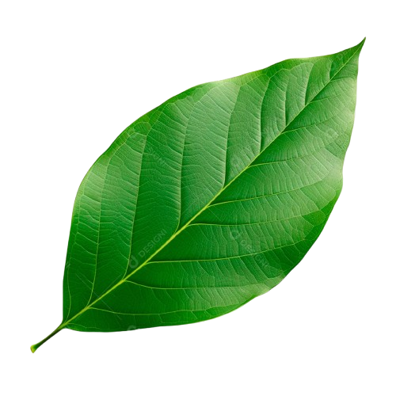

Amazônia
Conscientização: Preservar as Maravilhas da Floresta Amazônica
A beleza da Amazônia inspira e educa. Veja, compartilhe e ajude a proteger.


Dica: Use imagens em alta resolução para manter a qualidade do layout.
Desmatamento: Causas e Consequências
O desmatamento ameaça o ciclo das chuvas, a biodiversidade e o modo de vida de milhões de pessoas. Combater exige informação, fiscalização e alternativas econômicas sustentáveis.
Taxa anual
/* SUBSTITUA por dado real */
Área afetada
/* SUBSTITUA por dado real */
Áreas protegidas
/* SUBSTITUA por dado real */


/* Troque os arquivos em photos/ pelos seus */
Amazônia do Futuro
Tecnologia, comunidades e educação caminhando juntas para restaurar e proteger a floresta.
Tecnologia a Favor
Drones, satélites e IA para monitoramento em tempo real e alerta precoce.
Economia da Floresta
Cadeias produtivas sustentáveis que geram renda sem derrubar árvores.
Educação & Cultura
Fortalecimento de saberes tradicionais e educação ambiental nas escolas.
/* Altere o link acima para sua página de ação/campanha */